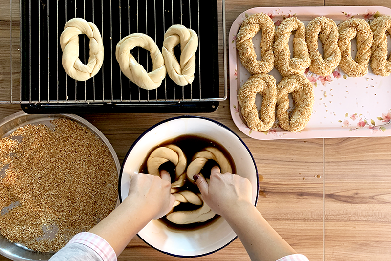

Simit - Türkische Brezel

30min
Normal
20.11.2025
| 50 | g Weizenmehl |
| 0.25 | Würfel Frischhefe |
| 15 | ml lauwarm Wasser |
| 10 | ml Milch |
| 10 | ml Sonnenblumenöl |
| 0.2 | EL Zucker |
| 0.1 | TL Salz |
| 0.3 | EL Traubensirup |
| 10 | ml Wasser |
| 15 | g Sesam |
Zubereitung
30 Min. Arbeitszeit
40 Min. Koch-/Backzeit
1 Std. 55 Min. Gesamtzeit
45 Min. Ruhezeit
-
Zuerst werden Öl, Wasser, Milch, Zucker, Salz und Hefe in einer Schüssel verrührt, bis sich die Hefe, das Salz und der Zucker vollständig aufgelöst haben. Anschließend wird nach und nach Mehl hinzugegeben, bis ein weicher, aber nicht klebriger Teig entsteht.
-
Der Backofen wird auf etwa 50 Grad vorgeheizt und danach wieder ausgeschaltet. Der Teig wird abgedeckt in den warmen Ofen gestellt und darf dort ungefähr eine halbe Stunde ruhen. Danach wird er zu einer langen Rolle geformt und in zehn gleich große Stücke von etwa neunzig Gramm geteilt. Diese Teigstücke sollten nochmals für etwa fünfzehn Minuten an einem warmen Ort, am besten abgedeckt, gehen.
-
Währenddessen wird Sesam in einer Pfanne ohne Fett leicht angeröstet, bis er goldbraun ist. Dabei kann er leicht aufpoppen wie Popcorn, was völlig normal ist. In einem tiefen Teller werden Sirup und Wasser gut miteinander verrührt, damit der Sirup später besser haftet.
-
Nun wird der Backofen auf 190 Grad Ober und Unterhitze vorgeheizt. Aus jedem Teigstück wird eine sehr dünne, lange Rolle geformt, die anschließend zu einer Kordel verdreht wird. Die Enden werden zusammengedrückt, sodass ein Ring entsteht. Jeder der Teigringe wird kurz in die Sirup Wassermischung getaucht und danach im Sesam gewälzt. Anschließend kommen sie auf ein Backblech und werden im heißen Ofen etwa zwanzig Minuten gebacken, bis sie schön goldbraun sind.
-
Nach dem Backen werden die Simit Ringe in ein Geschirrtuch gewickelt, damit sie weich bleiben und nicht austrocknen. Sie schmecken sowohl mit süßen Aufstrichen als auch mit herzhaften Belägen sehr gut und lassen sich problemlos einfrieren, um sie später nochmals zu genießen.
Rezept erstellt von
 Resit
Resit